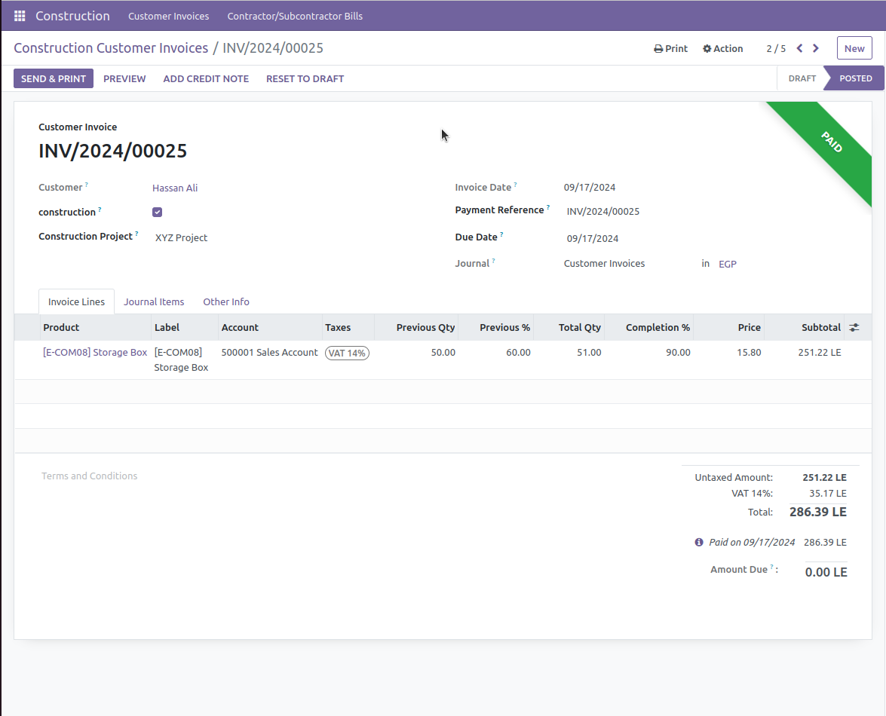
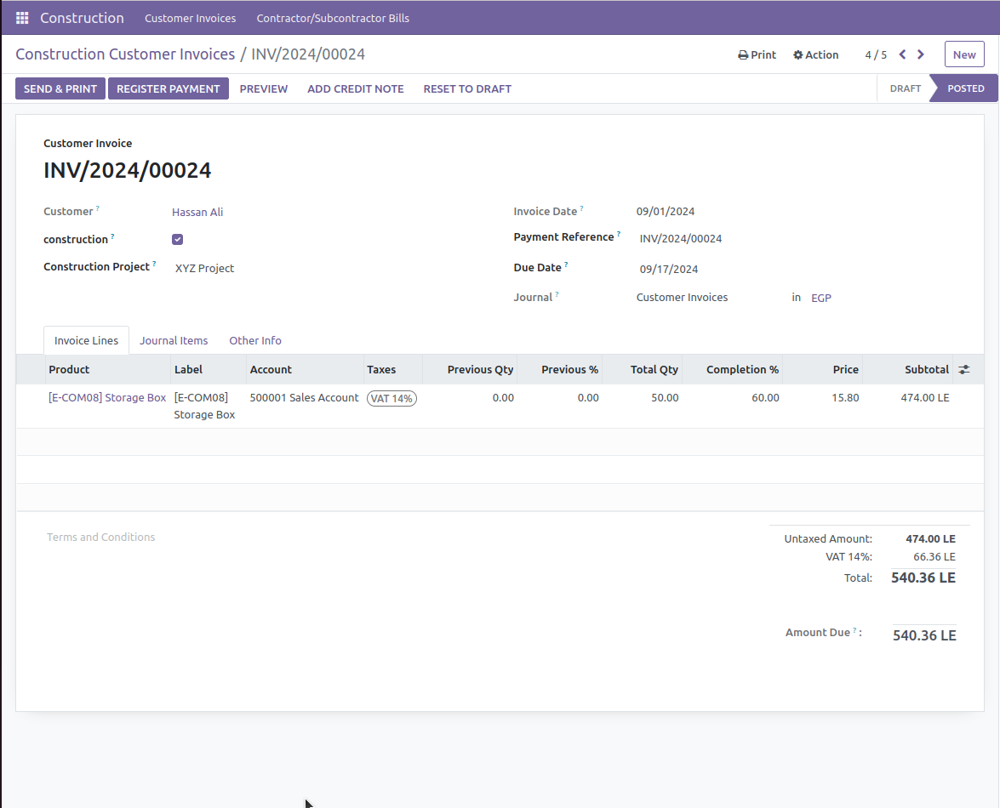
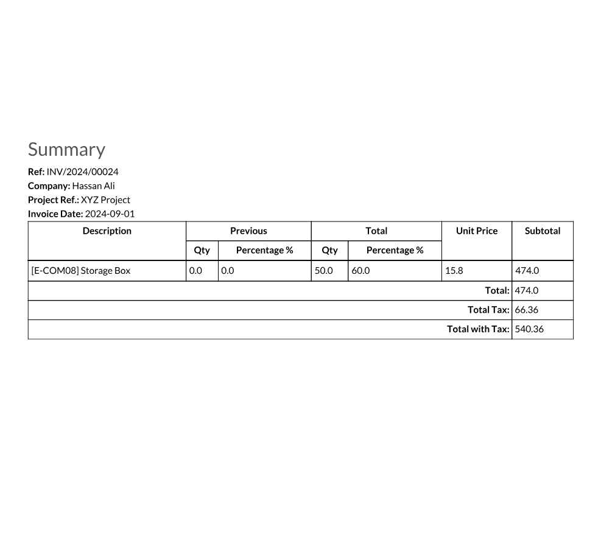
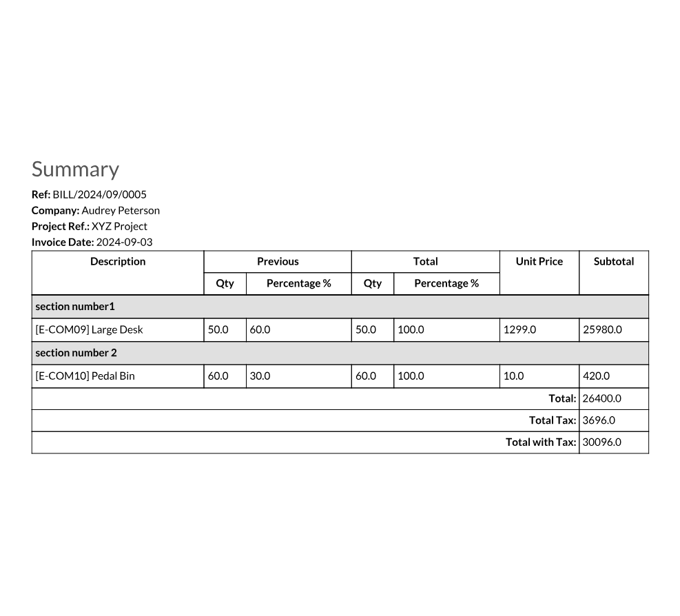

Construction Management invoices
This module provides a comprehensive and professional solution for managing construction invoices for both clients and contractors. It enables users to efficiently organize and calculate invoices based on the percentage of completion for each item in the invoice. Furthermore, it tracks the quantities previously invoiced in past invoices, providing a complete and up-to-date view of the project's financial status. Key Features: Professional Invoice Management: Create and manage construction invoices for both clients and contractors based on the percentage of completion for each item. This ensures accurate and transparent invoicing aligned with the actual work progress. Track Previously Invoiced Quantities: Maintain a detailed record of quantities previously invoiced in earlier invoices to prevent duplication and ensure consistency in billing across all project phases. Comprehensive Project Invoice Overview: View all invoices related to a project, whether they belong to clients or contractors. This feature provides a holistic view of the project's financial health and progress. Customizable Invoice Reports: Generate and print detailed invoice reports that showcase the completion percentage for each item, the executed quantities, and the quantities already invoiced. This facilitates clear communication and documentation with all stakeholders. This module streamlines the management of construction invoices, enhancing accuracy, efficiency, and transparency throughout the project lifecycle, benefiting all involved parties. you can show details in the following video https://youtu.be/WeVUkV96GX0 for additional service contaact whatsapp +2 01222945469




